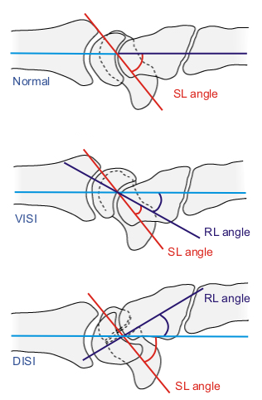
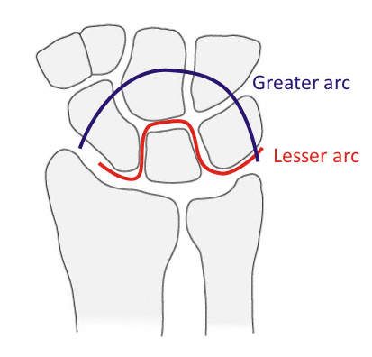

Fractures and dislocations involving the carpus can be easily misdiagnosed as wrist sprains
The carpus is made up of 8 bones grouped into 2 rows
Distal carpal row: strong ligamentous connections within the row and with the MCs form a rigid transverse arch
Includes trapezium (articulates with 1st MC), trapezoid (2nd MC), capitate (3rd), hamate (4th and 5th)
Proximal carpal row: articulates with the radius and ulna and includes the scaphoid, lunate, triquetrum
Pisiform is a sesamoid of the FCU tendon and articulates only with the triquetrum
Primary axis of rotation is through the head of the capitate
In radial deviation, the scaphoid flexes, causing the entire proximal row to flex
In ulnar deviation, the scaphoid extends and the proximal row extends
Ligaments:
Transverse carpal ligament extends from scaphoid and trapezium to hamate and pisiform
Forms the roof to the carpal tunnel
Extrinsic: connect radius to carpus and carpus to MCs
Volar ligaments stronger than dorsal
Volar: radioscaphocapitate (RSC), radiolunatotriquetral (RLT), radioscaphoid, ulnocapitate, ulnotriquetral and
ulnolunate
Dorsal: radiotriquetral and scaphotriquetral
Intrinsic: connect carpal bones to carpal bones and include the scapholunate (SL) and lunotriquetral (LT)
ligaments
Space of Poirier: ligament free space and potential area of weakness along proximal capitate
Lies between the RSC and RLT ligaments
Allows escape of distal carpal row from lunate in perilunate dislocations
Midcarpal instability:
Proximal row acts as "intercalated segment", connecting radius/ulna to a rigid distal row
Volar intercalated segment instability (VISI): commonly results from LT dissociation due to LT ligament injury
Lunate flexes due to loss of support from triquetrum
Scapholunate angle: < 30°
Radiolunate angle: > 15° of flexion
Dorsal intercalated segment instability (DISI): commonly due to scaphoid fracture or SL ligament injury
Lunate extends due to loss of support from radius (via the scaphoid)
Scapholunate angle: > 70°
Radiolunate angle: > 10° of extension

Intercalated segment instability
Triangular fibrocartilage complex (TFCC): stabilizer of ulnar carpus and DRUJ
Attaches at the base of the styloid process
Absorbs about 20% of load across wrist joint
Components: meniscal homologue, articular disk, ulnocarpal ligaments (ulnolunate and ulnotriquetral) and extensor
carpi ulnaris sheath
Perilunate dislocations and fracture-dislocations:
Most common wrist dislocation
Typically occurs after fall on an outstretched, ulnarly deviated and extended hand
Represents a continuum of injury to the ligamentous connections around the lunate
Lesser arc injury: energy passes around circumference of lunate and results in intrinsic ligament disruption
Greater arc injury: energy passes more distally through the scaphoid, capitate and triquetrum, resulting in fractures of
one or more of these bones
Twice as common as lesser arc injuries
Most common is the transscaphoid, perilunate fracture-dislocation (de Quervain) in which the scaphoid is
fractured
Distal carpal row generally dislocates dorsally

Lesser and Greater arcs
Patients present with pain, deformity and digital flexion (stage IV dislocation)
Assess NV status and identify associated injuries
Median nerve paresthesias are common with stage IV dislocations
Ulnar nerve, arterial injuries and tendon injuries can also occur
Radiocarpal fracture-dislocations:
Uncommon injury associated with high-energy trauma
May occur as a pure ligamentous injury (rare) or fracture-dislocation
Most common avulsion fragments include: Barton's fracture (dorsal or volar lip fracture of the distal radius),
radiostyloid (avulsion of the RSC ligament), volar lunate facet (RL ligament) and the ulnar styloid
Ulnar translation is most common
Patients present with pain, swelling and wrist deformity if spontaneous reduction has not occurred
Assess NV status and identify associated injuries
Neurovascular compromise is common due to compression
Hand ischemia warrants immediate relocation
Median nerve is more commonly involved than ulnar nerve
Scapholunate instability:
Most common ligamentous disruption in the wrist
Represents injury to the scapholunate (SL) ligament, decoupling lunate and scaphoid motion
Complete tears demonstrate widening of the SL interval on AP radiographs
Scaphoid tends to flex without this constraint while the lunate extends (DISI)
The result of stress loading of the carpus while in extension and ulnar deviation
Patients present with swelling acutely
Assess NV status and identify associated injuries
Tenderness to palpation of scapholunate region is often present
Pain is reproduced with vigorous grasp and loading activities (i.e. push ups)
Watson test: pressure applied to scaphoid tubercle volarly
Pain or a clunk elicited when wrist is brought from ulnar to radial deviation is suggestive of SL
instability
Helps diagnose dynamic scapholunate deformity
Static deformity presents with abnormal static radiographs
Dynamic deformity presents with normal radiographs but abnormal stress testing and stress radiographs
Lunotriquetral dissociation:
Result from disruption of the LT ligament, commonly from an axial load
Triquetrum tends to extend without LT ligament constraint while lunate tends to flex (VISI)
Assess NV status and identify associated injuries
Patients present with tenderness dorsally one finger breadth distal to ulnar head
May demonstrate a painful clunk with wrist deviation
LT shear test: dorsally directed pressure on the pisiform and volarly directed pressure on the lunate creates a shear
force that can reproduce pain